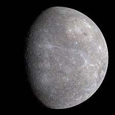
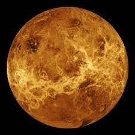
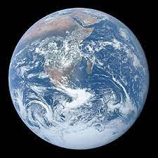
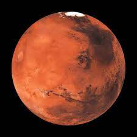
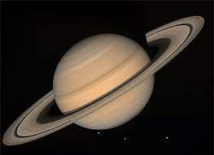

Tudo sobre o Sistema Solar.
Aqui nesse site você aprenderá um pouco sobre os planetas de nosso Sistema Solar, Incluindo nossa estrela. Para começar vamos ir com o corpo celeste mais importante de todo o Sistema Solar:
O Sol

|
O Sol é a estrela central do Sistema Solar. Todos os outros corpos do Sistema Solar, como planetas, planetas anões, asteroides, cometas e poeira, assim como todos os satélites associados a estes corpos, giram ao seu redor.Responsável por 99,86% da massa do Sistema Solar, o Sol possui uma massa 332 900 vezes maior do que a da Terra, e um volume 1 300 000 vezes maior do que o do nosso planeta.A distância da Terra ao Sol é de cerca de 150 milhões de quilômetros ou 1 unidade astronômica (UA). A luz solar demora aproximadamente 8 minutos e 18 segundos para chegar à Terra. Energia do Sol na forma de luz solar é armazenada em glicose por organismos vivos através da fotossíntese, processo do qual, direta ou indiretamente, dependem todos os seres vivos que habitam nosso planeta. A energia solar também é responsável pelos fenômenos meteorológicos e o clima na Terra. |
Mercúrio
|  | O planeta Mercúrio possui três recordes: é o mais rápido, o mais próximo do sol e o menor planeta do sistema solar.Mercúrio é o primeiro planeta do sistema solar, a contar a partir da proximidade com o Sol, distando-se em apenas 57,9 milhões de quilômetros da estrela em média. Com um diâmetro de 4878 km, é o menor entre os planetas do nosso sistema solar e também o que realiza mais rapidamente o seu movimento de translação, executado a uma velocidade de aproximadamente 47,87 km/s, levando, assim, 88 dias para completar sua volta ao redor do sol.Quanto ao movimento de rotação em torno de si, o planeta Mercúrio executa-o apenas três vezes durante duas órbitas de translação, o que faz com que o seu dia solar seja o equivalente a 173 dias terrestres. Além disso, esse movimento de rotação acontece com o seu eixo sendo reto ao plano da órbita, por isso, Mercúrio não apresenta estações do ano e alguns locais não recebem a luz do sol. |
Vênus
|  | Vênus está situado no sistema solar em segundo lugar entre os planetas a partir do sol. O planeta Vênus possui grande semelhança com a Terra, ambos são do tipo terrestre, além disso, são semelhantes quanto ao tamanho, massa e composição. Vênus é o planeta de maior proximidade com a Terra, está distante entre 40,2 milhões de quilômetros e 260 milhões de quilômetros, essa variação é oriunda da órbita que os respectivos realizam em torno do sol. A diferença entre Terra e Vênus é a atmosfera, pois a atmosfera de Vênus é 92 vezes mais densa que a da Terra. Isso por que a atmosfera é constituída em grande parte de gás carbônico, ocasionando um profundo efeito estufa que coloca o planeta como o mais quente entre todos os outros. |
Terra
|  | O Planeta Terra é o terceiro mais próximo do Sol. O Planeta Terra, também conhecido como mundo, planeta azul ou planeta água, tem cerca de 70% da sua superfície coberta por água. A existência dessa substância em seu estado líquido, juntamente à presença do oxigênio e a capacidade de reciclar gás carbônico fazem da Terra um planeta com características únicas. Das grandes descobertas astronômicas, não há ainda como afirmar que exista um planeta com características tão peculiares capaz de propiciar a existência dos seres vivos. E a Terra não é “viva” apenas sob a ótica biológica, mas também sob a ótica atmosférica, geológica e física, uma vez que tudo isso está em constante transformação. A Terra é considerada um planeta telúrico(Rochoso) e possui sua estrutura interna dividida em: crosta terrestre, manto e núcleo. Além da estrutura interna, há também a externa que corresponde à litosfera, hidrosfera, biosfera e atmosfera, que são o que oferece as condições favoráveis para a existência de vida aqui. Incluindo a lua, como nosso único satélite natural. |
Marte
|  | Marte é o quarto planeta a partir do Sol, o segundo menor do Sistema Solar. Muitas vezes é descrito como o "Planeta Vermelho", porque o óxido de ferro predominante em sua superfície lhe dá uma aparência avermelhada. Marte é um planeta rochoso com uma atmosfera fina, com características de superfície que lembram tanto as crateras de impacto da Lua quanto vulcões, vales, desertos e calotas polares da Terra. O período de rotação e os ciclos sazonais de Marte são também semelhantes aos da Terra, assim como é a inclinação que produz as suas estações do ano. Marte é o lar do Monte Olimpo, a segunda montanha mais alta conhecida no Sistema Solar (a mais alta em um planeta), e do Valles Marineris, um desfiladeiro gigantesco. Marte tem duas luas conhecidas, Fobos e Deimos, que são pequenas e de forma irregular(uma forma não esférica). Estas luas podem ser asteroides capturados. |
júpiter

|
Júpiter é o maior planeta do Sistema Solar, tanto em diâmetro quanto em massa, e é o quinto mais próximo do Sol.É um planeta gasoso, junto com Saturno, Urano e Netuno. Estes quatro planetas são por vezes chamados de planetas jupiterianos ou planetas jovianos, e são os quatro gigantes gasosos(composto principalmente de hélio e hidrogênio), isto é, que não são compostos primariamente de matéria sólida. O planeta também pode possuir um núcleo rochoso composto por elementos mais pesados, embora, como os outros planetas gigantes, não possua uma superfície sólida bem definida. Por causa de sua rotação rápida, de cerca de dez horas, ele possui o formato de uma esfera oblata(possui um eixo polar menor que o diâmetro do círculo do equador. Como um M&M's). Sua atmosfera externa é visivelmente dividida em diversas faixas de tempestade. Uma dessas faixas fica a Grande Mancha Vermelha, uma das características visíveis de Júpiter mais conhecidas. |
Saturno
|  | Saturno é o sexto planeta mais perto do Sol e o segundo maior do Sistema Solar atrás de Júpiter. Pertencente ao grupo dos gigantes gasosos, possui um pequeno núcleo rochoso, circundado por uma espessa camada de hidrogênio metálico e hélio. A sua atmosfera, também composta principalmente de hidrogênio, apresenta faixas com fortes ventos, cuja energia provém tanto do calor recebido do Sol quanto da energia irradiada de seu centro. Entretanto, estas bandas possuem aspecto pouco proeminente, com coloração que varia do marrom ao amarelado, devido à espessa névoa que envolve o planeta, além das camadas de nuvens. Sazonalmente surgem grandes sistemas de tempestades, além de vórtices permanentes existentes nos polos. Uma das características mais notáveis de Saturno é seu complexo e proeminente sistema de anéis, formados por gelo de água. Além dos anéis, mais de oitenta satélites naturais ao seu redor, dos quais destaca-se Titã, envolto em uma espessa atmosfera de metano. |
Urano

|
Urano é o sétimo planeta a partir do Sol, o terceiro maior e o quarto mais massivo dos oito planetas do Sistema Solar. Urano tem uma composição similar à de Netuno, e ambos possuem uma composição química diferente da dos maiores gigantes gasosos, Júpiter e Saturno. Como tal, os astrônomos algumas vezes os colocam em uma categoria separada, os "gigantes gelados". A atmosfera de Urano, embora similar às de Júpiter e Saturno em sua composição primária de hidrogênio e hélio, contém mais "gelos" tais como água, amônia e metano, assim como traços de hidrocarbonetos(carbono e hidrogênio).É a mais fria atmosfera planetária no Sistema Solar, com uma temperatura mínima de 49 K (-224 °C). Tem uma complexa estrutura de nuvens em camadas, e acredita-se que a água forma as nuvens mais baixas, e o metano as mais exteriores. Em contraste, seu interior é formado principalmente por gelo e rochas. Como os outros planetas gigantes, Urano tem um sistema de anéis, uma magnetosfera e vários satélites naturais. |
Netuno

|
Netuno é o último planeta do sistema solar Trata-se do oitavo mais distante do Sol, o que confere a ele temperaturas muito baixas, em torno de -200 °C. O planeta Netuno é classificado como um gigante de gelo em função de sua composição, que é feita por gases como hélio, metano, hidrogênio e amônia, e da ausência de uma superfície sólida. Sendo, portanto, o planeta mais distante do Sol, o tempo que Netuno leva para dar uma volta completa em torno dessa estrela é no total de 165 anos terrestres. Já a sua rotação, que é o movimento que realiza em torno de seu próprio eixo, decorre em 16 horas, o que corresponde à duração de um dia completo em Netuno.Sua atmosfera é essencialmente formada pelos gases hidrogênio, hélio e metano, sendo esse último o responsável pela coloração azulada característica de Netuno. Ventos muito intensos são registrados nessa camada, com velocidades superiores a 2 mil km/h, o que leva os pesquisadores a caracterizarem Netuno como o planeta com um dos climas mais severos do nosso Sistema Solar. |
Confira no vídeo os efeitos sonoros dos planetas. No espaço não existe som, mas com as sondas da NASA podemos transformar emissões de rádio desses planetas para efeitos sonoros. Veja a seguir: